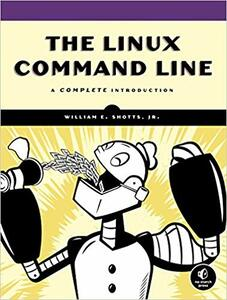

Everyone:
Next week, we will continue to explore shell scripting. This time, however, we will unlock the true power of the Unix philosophy by studying sophisticated pipelines for filtering text. Additionally, we will also learn to wield regular expressions to create nifty pattern matching tools.
The focus of this reading is to introduce regular expressions and revisit filters and pipelines.

The readings for this week are:
Work through the Lessons in the Interactive Tutorial. You can use the Regexpr to visualize your regular expressions.
Digital Ocean Tutorials:
This week, your reading quiz is split into two sections: the first part is your normal dredd quiz, while the second part involves a series of pipelines.
Record the answers to the following Reading 03 Quiz questions in your
reading03 branch:
For the second part, you are to complete the following pipelines:
Convert all the input text to upper case:
$ echo "Read the fine manual" | ...
READ THE FINE MANUAL
Find and replace all instances of Arch with Pop:
$ echo "BTW, I use Arch" | ...
BTW, I use Pop
Remove any leading whitespace from a string of text:
$ echo " Yes, do as I say" | ...
Yes, do as I say
Parse the /etc/passwd file for the shell of the root user:
$ curl -sL https://yld.me/raw/yWh | ...
/bin/sh
Hint: You may need to read up on the format of /etc/passwd
Find all the records in /etc/passwd that have a number that begins with
a 4 and ends with a 7:
$ curl -sL https://yld.me/raw/yWh | ...
rtkit:x:499:497:RealtimeKit:/proc:/sbin/nologin
qpidd:x:497:495:Owner of Qpidd Daemons:/var/lib/qpidd:/sbin/nologin
uuidd:x:495:487:UUID generator helper daemon:/var/lib/libuuid:/sbin/nologin
mailnull:x:47:47::/var/spool/mqueue:/sbin/nologin
Find and replace all instances of /bin/sh, /bin/bash, /bin/csh, and /bin/tcsh
to /bin/zsh in /etc/passwd:
$ curl -sL https://yld.me/raw/yWh | ... | grep zsh
root:x:0:0:root:/root:/bin/zsh
mysql:x:27:27:MySQL Server:/var/lib/mysql:/bin/zsh
xguest:x:500:501:Guest:/home/xguest:/bin/zsh
condor:x:108172:40:Condor Batch System:/afs/nd.edu/user37/condor:/bin/zsh
To record your pipelines, you will need to write your answers to the filters.sh script:
# Download filters template
$ curl -LO https://www3.nd.edu/~pbui/teaching/cse.20289.sp24/static/txt/reading03/filters.sh
Each question has a corresponding function; for instance, the solution for
Question 1 should be recorded in q1_answer:
#!/bin/bash
q1_answer() {
# TODO: Complete pipeline
echo "Read the fine manual" | ...
}
To construct your pipelines, you should try them interactively in your shell. Once you found a reasonable solution, you can record them in the filters.sh script under the appropriate function.
To test your pipelines, you need to download the Reading 03 Makefile, which in turn will download the test_filters.sh test script and execute it:
# Download Makefile
$ curl -LO https://www3.nd.edu/~pbui/teaching/cse.20289.sp24/static/txt/reading03/Makefile
# Download test scripts and run test
$ make
...
# Check your filters
$ ./test_filters.sh
Checking reading03 filters.sh ...
Q1 Success
Q2 Success
Q3 Success
Q4 Success
Q5 Success
Q6 Success
Score 3.00 / 3.00
Status Success
To submit your work, follow the same process outlined in Reading 01:
$ git switch master # Make sure we are in master branch
$ git pull --rebase # Make sure we are up-to-date with GitHub
$ git checkout -b reading03 # Create reading03 branch and check it out
$ cd reading03 # Go into reading03 folder
$ $EDITOR answers.json # Edit your answers.json file
$ ../.scripts/check.py # Check reading03 quiz
Checking reading03 quiz ...
Q1 1.00
Score 1.00 / 1.00
Status Success
$ git add answers.json # Add answers.json to staging area
$ git commit -m "Reading 03: Quiz" # Commit work
$ $EDITOR filters.sh # Edit your filters.sh file
$ ./test_filters.sh # Check your filters
Checking reading03 filters.sh ...
Q1 Success
Q2 Success
Q3 Success
Q4 Success
Q5 Success
Q6 Success
Score 3.00 / 3.00
Status Success
$ git add Makefile # Add Makefile to staging area
$ git add filters.sh # Add filters.sh to staging area
$ git commit -m "Reading 03: Filters" # Commit work
$ git push -u origin reading03 # Push branch to GitHub
Remember to create a Pull Request and assign the appropriate TA from the Reading 03 TA List.
DO NOT MERGE your own Pull Request. The TAs use open Pull Requests to keep track of which assignments to grade. Closing them yourself will cause a delay in grading and confuse the TAs.